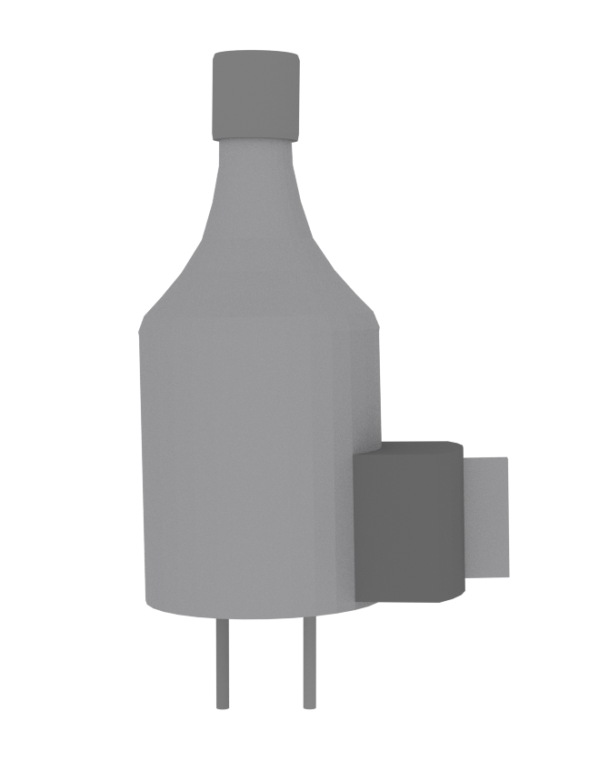
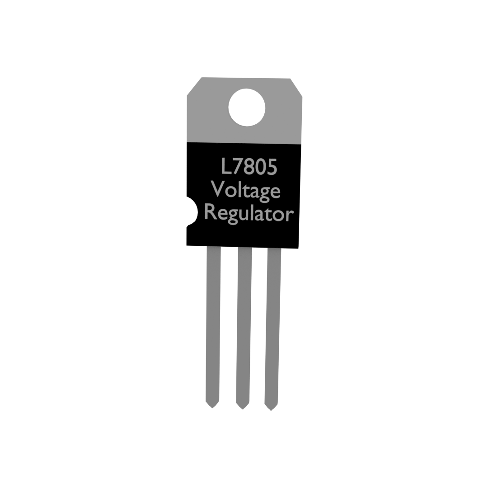
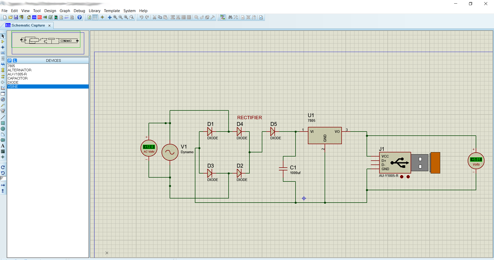
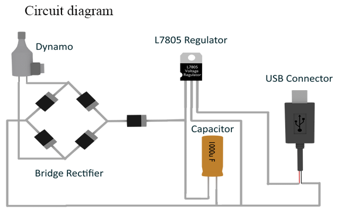
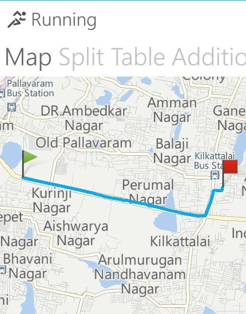

In the day to day life, we all run for the charging of the mobile phones and the charging plugs. But whatif you could charge your phone while going on the cycle ride. This is the very old concept which all your father and forefathers must beknowing, it is none other than using the dynamo for Charging our phone.
When we started thinking of the engineering projects for ahobby, the first thing we saw was the old dynamo in old father’s cycle. We started working on charging the phone with it and making a small emergency light charged with it.
Further, read this blog to know how to make the circuit for this and make use of the old dynamo.Also to get a short note of the basic of building an own circuit.
Also make a look at our explanation video on it in the link below.
You may think what is the relation with the cycle and dynamo, definitely, there is no relation lol. This is to make you aware of some quick tips before you start reading the project.
When we started checking the voltage from the dynamo, we thoughts was DC one, we asked some they said it was pulsating DC, AC etc and no proper information present on the internet too….. It was quite confusing for us to decide what form of the current it was !.
The only way left for us was to experiment it. When we started rotating the wheel, the voltage was oscillating in the DC side and when the knob on the AC side was switched, the voltage was constant around (9-12 V) depending on the speed of the rotation. Thus half the process was confirmed that the power from the dynamo was AC. Might be some models may have the DC power, just experiment out yourself.
Points to be noted :
The some of the important components for the making of this project is as follows:
DYNAMO

As we seen before that in our dynamo the current generated was Ac one. But unfortunately, our phones charge in the Dc source. Thus we need a proper and simple electronic circuit for this conversion.
The bridge rectifier is one where the sine wave of the AC supply is converted to the DC of the every alternating half cycles.
This is a voltage regulator which is used to regulate the output Dc Voltage to the required value. In this case, we use the 5 Voltage regulator. We can also any buck converters. To Make it simple here we have used this one.
VOLTAGE REGULATOR

Many Non Electrical students might be asking this question that what is the role of the capacitor here. As all the works have been completed by the rectifiers and the voltage regulator.
Answer:
The answer to this little interesting if you are patient enough to read. Even though the DC of the required voltage is formed, there is the presence of voltage ripples and distortions, Capacitor with its unique quality of charging and discharging, compensates the voltage ripples and gives the steady DC voltage. If you are interested to know how it happens I will be making a separate video on it.
Before Practically experimenting stuff, it is advised to stimulate in a software. Make the same connections as final. The output of the simulations is working good. There are as follows:

The connections are given as per the circuit diagram below. 
You may think it might think Calculations are little boring …. Don’t worry I am doing It with a practical example so go on….!
Battery size 1500 mAh.
If we drive a cycle for 2 minutes it charges 1.5% of the Battery.
1.5% of 1500=22.5mAh for 2 min.
Thus for 1min =11.25mAh.
Thus for 1hr (11.25* 60=675mAhie 0.675Ah).
The current passed at 0.675 A (approx).
Watts delivered by the dynamo is
Power= Voltage X Current
Power= 5V X 0.675A= 3.75W
We practically build our circuit and tested in the real time and charging time and various details are measured. Cycled for a distance approximately around 2.6km, to our surprise the phone was charged around 10%. As it is a windows nokia phone with us. We are only able to calculate the details approximately in a app. 
(Power calculations are carried at the average cycle driving
speed of 10 Km/h)
we all know this basic Speed formula ie (Speed= Distance /time). With the known values we are calculating the Time.
Time= Distance/Speed
Time = 2.6/10= 0.26hr
Time in min =16 min approx
charge per min=0.75
Total charge=0.75X16= 12 %
Thus theoretically and practical calculations are verified thus.